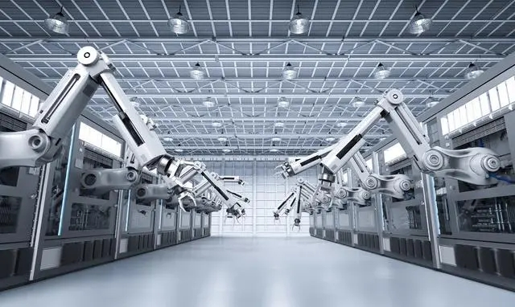

As Zhang Ailing said, when people live to a certain age, they always have some insights of their own, but some people remember them, and some people ignore them and forget them. I always don’t want to be that person who forgets my own feelings, so I want to write something. I have been working in the automation industry for some years, so I would like to write down my personal understanding and some prospects for automation to serve as a starting point:

Recently I saw some articles about robots on the Internet. It seems that people at home and abroad are generally very optimistic about China's robot market in the next few years. This is something I have always agreed with. But it is not so much optimistic about China's robot market in the future as it is optimistic about China's automation market. Thinking about the future mainstream of mankind, it must be informatization and "interconnection". Undoubtedly, the Internet has paved the way for our future. How can manufacturing be informatized? I think the first thing is automation. When the manufacturing industry slowly becomes automated and informatized, it is also the so-called real transformation of the Internet from "delivering value" to "creating value" of commodities. Only then can human beings be truly civilized and transform from low-end workers to smart people.
However, when it comes to automation, many "experts" talk about robots. The reason why robots have become the representative products of automation is because of their advantages.
First, mass-produce mature products.
From non-standard to standard, robots have reached the stage of maturity today. Non-standard standardization is an eternal trend. Only after non-standard standardization can products be truly produced, and only then can products formed into products be widely accepted by society. Because its performance is stable and easy to promote and copy, production is no longer complicated and the development cycle is short. And robots are just such a mature product. It is precisely based on this premise that it has the advantages of high accuracy and stability.
Second, it occupies a small space.
The broad concept of six-axis robots shows that the robot occupies a small butt and performs automated operations such as transportation and assembly over a wide range. Because of this, various types of robots have sprung up in China in the past two years. From the number of robots and manufacturers exhibited at the Shenzhen Automation Exhibition in 2014 and 2013, we can compare how many robot companies were born in this year. However, most domestic robots are currently in the plagiarism stage, and it is not ruled out that many robot technology companies defraud state subsidies. Compared with well-known foreign brands such as ABB and FANUC in terms of innovation, accuracy and stability, they are far behind. Some robots can only be regarded as mass-produced handling mechanisms, nothing more.